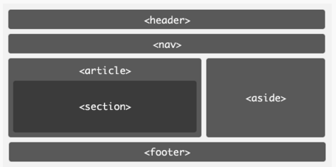

| 一般的html结构 | |
|---|---|
 | |
| <aside> | 与主题无关内容,如广告 |
| <article> | 独立内容例如文章,帖子 可以表示内嵌页面,还能表示插件 article一般包含<header>和<footer>元素 |
| <section> | 对内容进行分块 通常由内容及其标题组成 |
| <nav> | 导航 |
| <header> | 页面头部 引导和导航作用的结构元素 |
| <footer> | 页面底部,包含版权信息等 |
| 文本标签 | |
|---|---|
<a> 超链接 | href
target 链接打开方式
|
| <em> <strong> 强调 | |
| <span> 无语义 | |
| <br> 另起一行 | |
| <cite> <q> 引用 | |
| <code>代码 | |
| <b><i> 格式化 | |
<secton>
使用事项
1.不要将section作为设置样式的容器
2.优先使用article,side,nav元素
3.没有标题,不要使用section
<time> 元素
<time datetime="2015-11-9">2015-11-9</time><!-- datetime 用于电脑识别,我们看到的是元素内容--><time datetime="2015-11-9T20:00Z">2015-11-9</time><!-- T表示时间分割,Z表示使用UTC时间--><time datetime="2015-11-9T20:00+9:00"></time><!-- +表示时差-->
pubdate 属性
用于表示事件发布的日期